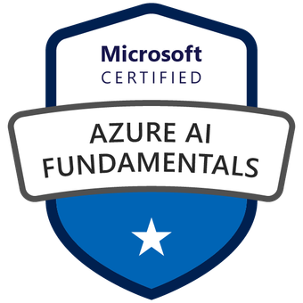
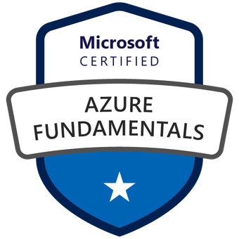
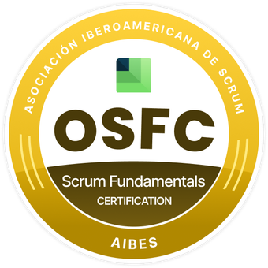
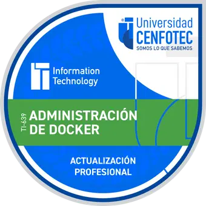
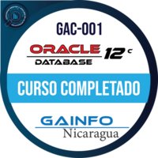

Soporte técnico enterprise
Atención de incidentes y consultas de usuarios finales en Windows, entornos SaaS, aplicaciones de negocio y conectividad. Diagnóstico, escalamiento y resolución con seguimiento hasta el cierre.
Managua, Nicaragua · Disponible para soporte remoto y proyectos
Ingeniero Electrónico con más de 15 años en tecnología de la información. Administro sistemas y clouds en producción, doy soporte a usuarios empresariales y construyo software full-stack. Elige un perfil para ver cómo te puedo ayudar.
Quién soy
Soy Administrador de Sistemas y soporte TI con más de 15 años de experiencia atendiendo usuarios empresariales, infraestructura, entornos en la nube, aplicaciones de negocio y sistemas en producción. Mi trabajo no termina en “reiniciar el equipo”: diagnostico, escalo cuando corresponde, resuelvo, y cierro con el análisis de causa raíz y la acción correctiva que evita que el problema regrese.
Me siento cómodo trabajando tanto con personal técnico como con usuarios no técnicos: Active Directory, Microsoft Entra ID, Windows Server, Azure, AWS, DNS/DHCP, virtualización, PowerShell y Python son parte de mi día a día. Disfruto especialmente la gestión de incidentes, la automatización de tareas repetitivas y la mejora continua de la operación.
Soy Desarrollador Full-Stack senior e Ingeniero Electrónico. Construyo soluciones web escalables con Angular, React y Next.js, sobre arquitecturas backend en Node.js, PHP y .NET, con base de datos en PostgreSQL, MySQL, SQL Server, MongoDB y Firebase.
Además de escribir código, me encargo de la infraestructura que lo sostiene: entornos Linux y Windows Server, virtualización, pipelines de CI/CD con Jenkins, Azure DevOps y SonarQube, y automatización con Ansible. Lidero equipos ágiles bajo Scrum y me gusta que los productos que entregamos se puedan medir en la operación real.
Cómo te puedo ayudar
Elige el perfil y revisa los servicios, la experiencia y las habilidades de esa especialidad.
Atención de incidentes y consultas de usuarios finales en Windows, entornos SaaS, aplicaciones de negocio y conectividad. Diagnóstico, escalamiento y resolución con seguimiento hasta el cierre.
Windows Server, Linux, Active Directory, Group Policy, DNS/DHCP, patching, actualizaciones, monitoreo, backups y disaster recovery en entornos híbridos y de producción.
Microsoft Entra ID / Azure AD, administración de usuarios y grupos, permisos, autenticación y MFA, políticas de acceso y ciclo de vida de las cuentas.
Azure y AWS: gestión de recursos, soporte de aplicaciones SaaS, automatización de tareas repetitivas con PowerShell y Python, runbooks y mejora continua de la operación.
Análisis de causa raíz, procedimientos de troubleshooting, base de conocimiento y documentación técnica para que el equipo resuelva más rápido la próxima vez.
Diagnóstico de aplicaciones en la nube (Firebase, Firestore, Cloud Functions), flujos de datos, notificaciones y mantenimiento de aplicaciones de negocio en producción.
Angular, React, Next.js, TypeScript y JavaScript moderno. Interfaces accesibles, responsivas y pensadas para escalar en componentes y en tamaño del equipo.
Node.js y Express, PHP con Laravel y Symfony, .NET MVC en C#, APIs REST y GraphQL, autenticación segura con JWT/OAuth y arquitectura MVC.
PostgreSQL, MySQL, SQL Server, MongoDB y Firebase (Firestore/Realtime): modelado, optimización de consultas, migraciones e índices.
AWS y Azure, Jenkins, Azure DevOps, SonarQube, Ansible y Git: pipelines automatizados, calidad de código y despliegue predecible entre entornos.
Arquitectura y gestión de servidores Linux (RedHat) y Windows Server, virtualización, entornos de desarrollo y staging, monitoreo y respaldo.
Programa de mentoría en desarrollo web (CodeCrafters Labs, 2025): formación intensiva en React, Next.js, Node.js, GraphQL y bases de datos.
Trayectoria
Share Service para Institución Financiera · Managua, Nicaragua
Angular · Firebase · Cloud Functions · Firestore
Cubas Eléctricas · Febrero — Junio 2019
Casita San Payo y SIRT-MEPUN
Inifom · Enero — Diciembre 2017
Share Service para Institución Financiera · Managua, Nicaragua
CodeCrafters Labs
Angular 17 · Firebase · Cloud Functions · FCM
Cubas Eléctricas · Febrero — Junio 2019
Casita San Payo y SIRT-MEPUN
Inifom · Enero — Diciembre 2017
Stack y competencias
Credenciales verificables
Cada insignia enlaza a la página oficial de verificación de la credencial.
 AWS Certified Solutions Architect – Associate
Amazon Web Services · Verificar
Microsoft Certified: Azure Administrator Associate
Microsoft · Verificar
AWS Certified Solutions Architect – Associate
Amazon Web Services · Verificar
Microsoft Certified: Azure Administrator Associate
Microsoft · Verificar
 AWS Certified Cloud Practitioner
Amazon Web Services · Verificar
AWS Certified Cloud Practitioner
Amazon Web Services · Verificar

Microsoft Azure AI Fundamentals Microsoft · Verificar
Microsoft Azure Fundamentals Microsoft · Verificar Scrum Foundation Professional Certification (SFPC™) Scrum.org · Verificar
Official Scrum Fundamentals Certification (OSFC™) Scrum.org · Verificar
Administración de Docker Acreditta · Verificar
Oracle Database 12c (GAC-001) Oracle · Verificar Agile Security Verificar en LinkedInPortafolio de soluciones
Sistema web para el control del consumo de agua. En este perfil, mi rol es el de soporte y operación de la plataforma en producción: troubleshooting, reportes, notificaciones y correcciones directas.
Plataforma de servicios profesionales. Mantenimiento y soporte en producción: investigación de errores, resolución de incidencias y mejoras continuas de la aplicación.
Sistema web de control de reservas de hotel. Desarrollador (2018): construcción de funcionalidades, integración de base de datos y soporte a los usuarios finales.
Sistema de inventario para recursos teológicos. Desarrollador (2018): implementación del sistema, control de acceso a datos y correcciones sobre los registros de inventario.
Herramienta interna para registrar servidores y dar seguimiento a las tareas de operación. Incluye la operación diaria del servicio y la generación de reportes para el equipo.
Plataforma de control de consumo de agua que desarrollé con Angular 17 y Firebase: lógica serverless con Cloud Functions y notificaciones en tiempo real con FCM.
Sistema propio de inventario y gestión de tareas que desarrollé en PHP y MySQL para la operación de entornos web en Linux (RedHat) y Windows Server.
Sistema de ventanilla única (“Single Window”) construido con .NET MVC en C# y AngularJS, para centralizar trámites y reducir la fricción operativa de la institución.
Plataforma de servicios profesionales desarrollada con Angular, PHP y Firebase, con mejoras continuas sobre la operación y la experiencia de usuario.
Sistema web de control de reservas de hotel. Desarrollador (2018): funcionalidades de reserva, integración de base de datos y soporte a los usuarios finales.
Sistema de inventario para recursos teológicos. Desarrollador (2018): implementación del sistema, control de acceso a datos y correcciones sobre los registros.
Formación y credenciales
Hablemos
Cuéntame qué necesitas y te propongo el siguiente paso. Respondo en menos de 24 horas hábiles.
Disponible para soporte remoto y proyectos